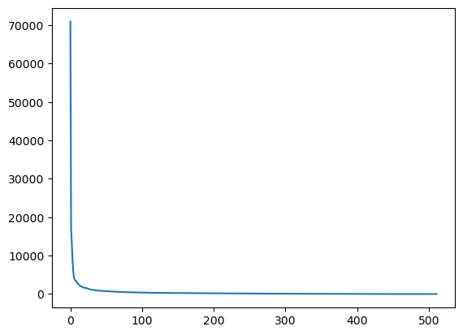
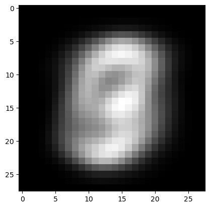
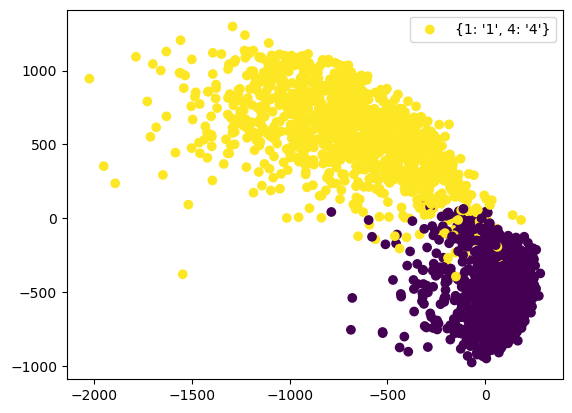

import numpy as np
print("Hello")
Hello
In this code we printed out a “Hello” command
Reply…
# Importing numpy
import numpy as np
# Consider an example matrix
A = np.array(
[
[-1, -2, 0, 1, -2, -3],
[-1, -2, -3, -2, 0, -3],
[-1, -3, 1, 3, 2, -4],
[2, 1, -1, 0, -2, 3],
[0, -3, -1, 2, -1, -3],
[1, -3, 2, 6, 0, -2],
[-3, 1, 0, -4, 2, -2],
[-2, 2, -2, -6, -2, 0],
[-3, -1, 2, 0, 2, -4],
[2, -2, 0, 4, -1, 0],
]
)
# Measure the shape of A: which is the maximum rank?
m, n = A.shape
print(f"The shape of A is: {(m, n)}.")
# Compute the SVD decomposition of A and check the shapes
U, s, VT = np.linalg.svd(A, full_matrices=True)
print(U.shape, s.shape, VT.shape)
# Define the full matrix S
S = np.zeros((m, n))
S[:n, :n] = np.diag(s)
The shape of A is: (10, 6).
(10, 10) (6,) (6, 6)
# Exercise: prove that U and VT are orthogonal matrices, i.e. U @ U^T = I and VT @ VT^T = I
print(np.linalg.norm(U @ U.T - np.eye(m))) # U @ U^T = I <-> U @ U.T - I = 0 <-> || U @ U.T - I || = 0
print(np.linalg.norm(VT @ VT.T - np.eye(n)))
1.433118328027982e-15
1.1576751205347359e-15
print(s)
# We expect is that rank(A) = 6 <- analytic rank
print(np.linalg.matrix_rank(A))
print(help(np.linalg.matrix_rank))
[1.32720236e+01 1.03590904e+01 6.02367888e+00 2.87366090e+00
1.07247430e-15 4.56866472e-16]
4
Help on _ArrayFunctionDispatcher in module numpy.linalg:
matrix_rank(A, tol=None, hermitian=False)
Return matrix rank of array using SVD method
Rank of the array is the number of singular values of the array that are
greater than `tol`.
.. versionchanged:: 1.14
Can now operate on stacks of matrices
Parameters
----------
A : {(M,), (..., M, N)} array_like
Input vector or stack of matrices.
tol : (...) array_like, float, optional
Threshold below which SVD values are considered zero. If `tol` is
None, and ``S`` is an array with singular values for `M`, and
``eps`` is the epsilon value for datatype of ``S``, then `tol` is
set to ``S.max() * max(M, N) * eps``.
.. versionchanged:: 1.14
Broadcasted against the stack of matrices
hermitian : bool, optional
If True, `A` is assumed to be Hermitian (symmetric if real-valued),
enabling a more efficient method for finding singular values.
Defaults to False.
.. versionadded:: 1.14
Returns
-------
rank : (...) array_like
Rank of A.
Notes
-----
The default threshold to detect rank deficiency is a test on the magnitude
of the singular values of `A`. By default, we identify singular values less
than ``S.max() * max(M, N) * eps`` as indicating rank deficiency (with
the symbols defined above). This is the algorithm MATLAB uses [1]. It also
appears in *Numerical recipes* in the discussion of SVD solutions for linear
least squares [2].
This default threshold is designed to detect rank deficiency accounting for
the numerical errors of the SVD computation. Imagine that there is a column
in `A` that is an exact (in floating point) linear combination of other
columns in `A`. Computing the SVD on `A` will not produce a singular value
exactly equal to 0 in general: any difference of the smallest SVD value from
0 will be caused by numerical imprecision in the calculation of the SVD.
Our threshold for small SVD values takes this numerical imprecision into
account, and the default threshold will detect such numerical rank
deficiency. The threshold may declare a matrix `A` rank deficient even if
the linear combination of some columns of `A` is not exactly equal to
another column of `A` but only numerically very close to another column of
`A`.
We chose our default threshold because it is in wide use. Other thresholds
are possible. For example, elsewhere in the 2007 edition of *Numerical
recipes* there is an alternative threshold of ``S.max() *
np.finfo(A.dtype).eps / 2. * np.sqrt(m + n + 1.)``. The authors describe
this threshold as being based on "expected roundoff error" (p 71).
The thresholds above deal with floating point roundoff error in the
calculation of the SVD. However, you may have more information about the
sources of error in `A` that would make you consider other tolerance values
to detect *effective* rank deficiency. The most useful measure of the
tolerance depends on the operations you intend to use on your matrix. For
example, if your data come from uncertain measurements with uncertainties
greater than floating point epsilon, choosing a tolerance near that
uncertainty may be preferable. The tolerance may be absolute if the
uncertainties are absolute rather than relative.
References
----------
.. [1] MATLAB reference documentation, "Rank"
https://www.mathworks.com/help/techdoc/ref/rank.html
.. [2] W. H. Press, S. A. Teukolsky, W. T. Vetterling and B. P. Flannery,
"Numerical Recipes (3rd edition)", Cambridge University Press, 2007,
page 795.
Examples
--------
>>> from numpy.linalg import matrix_rank
>>> matrix_rank(np.eye(4)) # Full rank matrix
4
>>> I=np.eye(4); I[-1,-1] = 0. # rank deficient matrix
>>> matrix_rank(I)
3
>>> matrix_rank(np.ones((4,))) # 1 dimension - rank 1 unless all 0
1
>>> matrix_rank(np.zeros((4,)))
0
None
import skimage
# Loading the "cameraman" image
x = skimage.data.camera()
m, n = x.shape
# Printing its shape
print(f"Shape of the image: {x.shape}.")
# Visualize the image
import matplotlib.pyplot as plt
plt.imshow(x, cmap="gray") # plt.plot(..)
plt.axis("off")
# some specifications here
plt.show()
Shape of the image: (512, 512).
print(f"The number of bytes required to memorize the image x is: {512 * 512}.")
The number of bytes required to memorize the image x is: 262144.
# Compute the SVD of x
U, s, VT = np.linalg.svd(x, full_matrices=True)
# Visualize the vector s
plt.plot(s)
plt.show()
# Build the full diagonal matrix S
S = np.zeros((m, n))
S[:n, :n] = np.diag(s)
# Define k
k = 80
# Truncate the SVD decomposition up to k
Uk = U[:, :k] # m x k
Sk = S[:k, :k] # k x k
VTk = VT[:k, :] # k x n
# Compute Xk
Xk = Uk @ Sk @ VTk # k-rank approximation of X
plt.imshow(Xk, cmap="gray") # plt.plot(..)
plt.axis("off")
# some specifications here
plt.show()
print(f"The number of bytes required to save Xk is {k * (m + n + 1)}.")
print(Xk.shape)

The number of bytes required to save Xk is 82000.
(512, 512)
import numpy as np
import pandas as pd
# Load data into memory
data = pd.read_csv('./train.csv')
print(data.shape)
(42000, 785)
# Convert data into a matrix
data = np.array(data)
# Split data into a matrix X and a vector Y where:
#
# X is dimension (42000, 784)
# Y is dimension (42000, )
# Y is the first column of data, while X is the rest
X = data[:, 1:]
X = X.T
Y = data[:, 0]
print(X.shape, Y.shape)
d, N = X.shape
(784, 42000) (42000,)
# Extract a single element from X
x = X[:, 12]
y = Y[12]
# Reshape it into the original 28 x 28 image
x = np.reshape(x, (28, 28))
print(x.shape)
# Visualize it
plt.imshow(x, cmap="gray")
plt.axis('off')
plt.show()
print(y)
(28, 28)
1
# sklearn -> (split, PCA, ..) DON'T USE IT
def split_data(X, Y, Ntrain):
d, N = X.shape
# Randomize
idx = np.arange(N)
np.random.shuffle(idx)
train_idx = idx[:Ntrain]
test_idx = idx[Ntrain:]
# Extract the training set
Xtrain = X[:, train_idx]
Ytrain = Y[train_idx]
# Extract the test set
Xtest = X[:, test_idx]
Ytest = Y[test_idx]
return (Xtrain, Ytrain), (Xtest, Ytest)
# Test it
(Xtrain, Ytrain), (Xtest, Ytest) = split_data(X, Y, 30_000)
print(Xtrain.shape, Xtest.shape)
(784, 30000) (784, 12000)
# First set: Center the data
cX = np.mean(Xtrain, axis=1)
# Make cX a column vector (instead of an abstract vector)
cX = np.reshape(cX, (784, 1))
plt.imshow(np.reshape(cX, (28, 28)), cmap='gray')
plt.show()
# Compute Xc = X - cX
Xc = Xtrain - cX
# Step 2: Compute the SVD
U, s, VT = np.linalg.svd(Xc, full_matrices=False)
print(U.shape, s.shape, VT.shape)
# Step3 : comput the truncated version of SVD
k = 2
Uk = U[:, :k]
P = Uk.T
Z = P @ Xtest
mine = (Ytest == 1) | (Ytest == 4)
plt.scatter(Z[0, mine], Z[1, mine], c=Ytest[mine], label={1:"1", 4:"4"})
plt.legend()
plt.show()


(784, 784) (784,) (784, 30000)